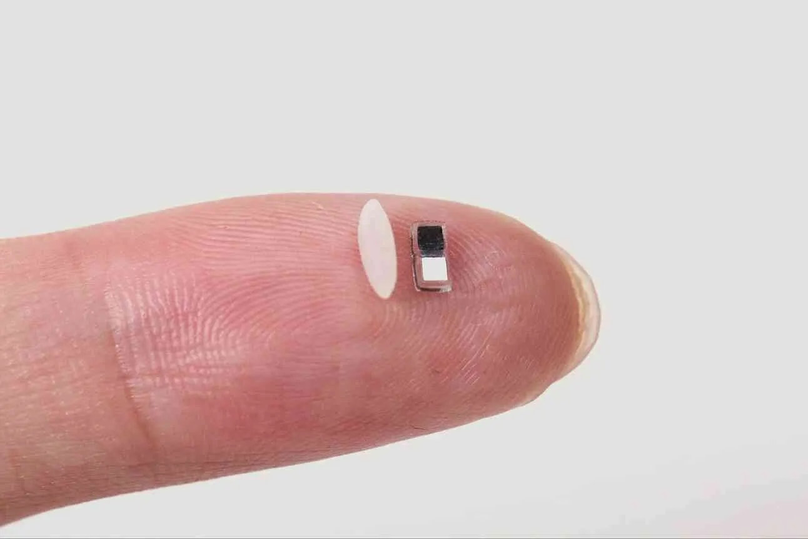

A pacemaker smaller than a grain of rice
Originally posted on LinkedIn, April 7, 2025.
Neil Armstrong survived walking on the moon, but not the removal of his temporary pacemaker. That routine procedure caused fatal bleeding.
In April 2025, scientists presented a new kind of temporary pacemaker. It is smaller than a grain of rice, has no wires or battery, and can be injected through a needle. It is triggered by light and simply dissolves inside the body when it is no longer needed.
Traditional temporary pacemakers use electrodes implanted in the heart muscle and connected to an external battery. This device instead contains two electrodes, made from conductive metal pads, that perform two jobs: they deliver the current that stimulates the heart to contract, and they provide the energy needed to run the device.
The pacemaker itself acts as a simple galvanic cell. Its electrodes use combinations of magnesium, zinc, and molybdenum, which react with bodily fluids to produce an electrical current.
On the other side of the device is a tiny light-activated switch. When the switch is on, it sends an electrical pulse into the heart tissue. When it is off, it does nothing.
The pacemaker works with a flexible smart patch placed on the skin above the heart. The patch monitors the heart rate. When it detects a slow or irregular rhythm, it flashes infrared light to activate the pacemaker.
The device remains active for anywhere from a few days to three weeks, depending on the metals used. After that, it dissolves in the body, avoiding another procedure to remove it. Its size and temporary nature make it especially useful for infants and vulnerable patients.
The current design improves on an earlier version that used near-field communication, or NFC. That model required an antenna, which made it much larger. The new design is small enough to support several pacemakers at once, placed in different parts of the heart and activated at different frequencies.
Researchers are also testing ways to combine the pacemaker with medical implants such as heart valves, which currently have no mechanism for controlling heart rhythm.
This is already in development and has been tested in animals. It could save lives while sparing millions of people unnecessary pain and risk.
